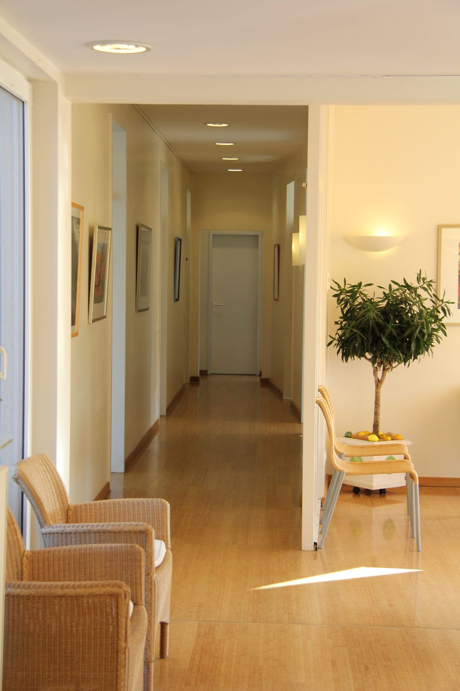
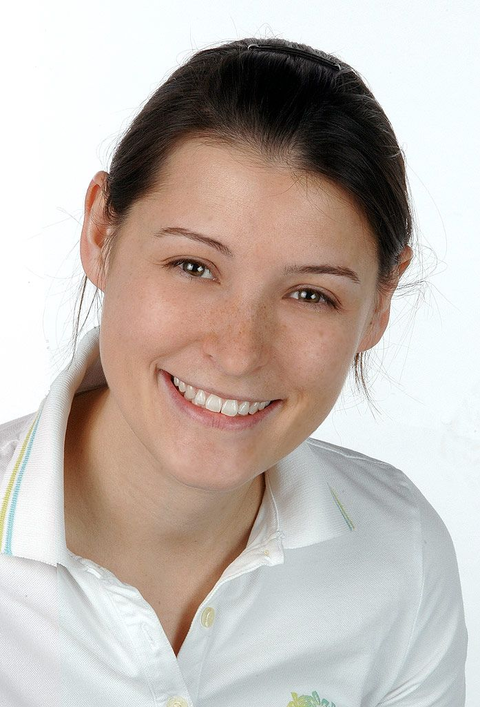
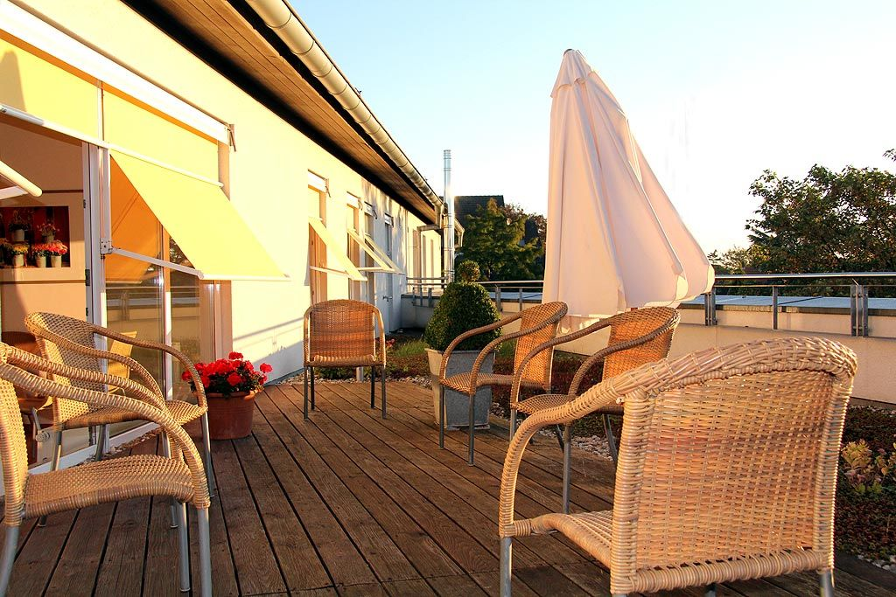
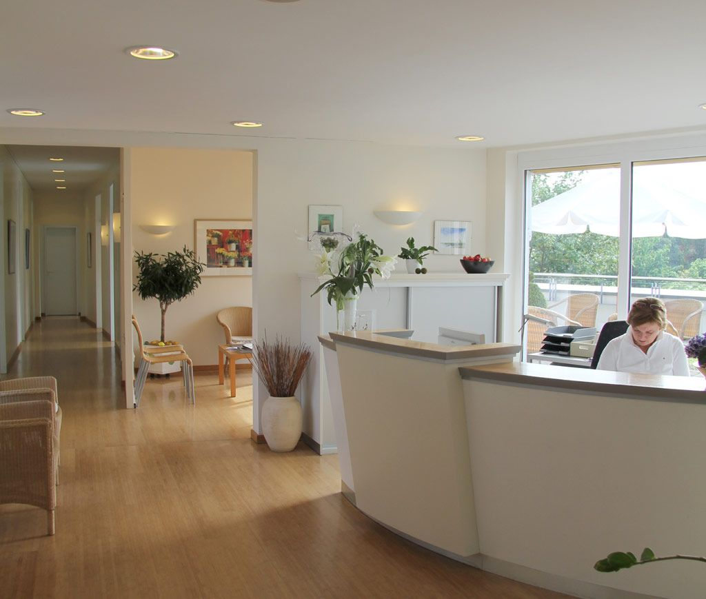
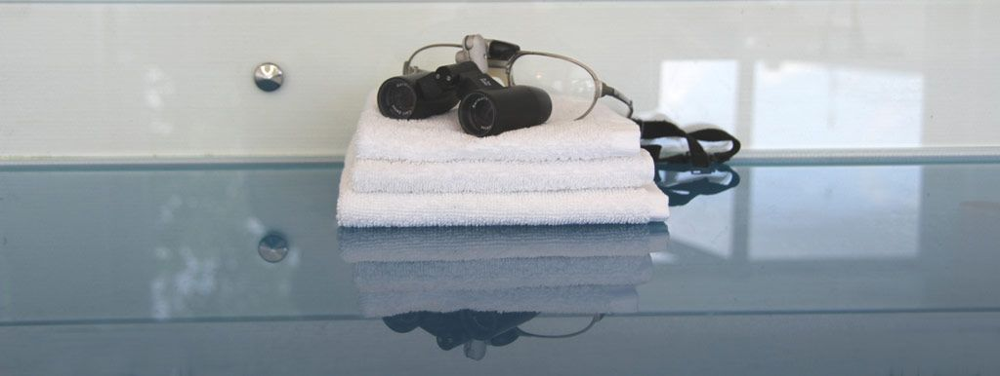

Wir erhalten Ihre Zähne.
Fachzahnärztliche Praxis für Parodontologie in Steinfurt-Borghorst. Dr. Christina Elberg und ihr Team behandeln Zahnfleisch und Zahnhalteapparat, damit Ihre eigenen Zähne lange halten.
SprechzeitenMo, Di, Do 8–12 und 14–18 Uhr
Für Patientinnen und Patienten
Termin, Parodontitis verstehen, Weg zur Praxis.
Für überweisende Praxen
Überweisung, Rückbericht, direkte Ansprechpartnerin.

Parodontitis, in Millimetern erklärt
Zwischen Zahn und Zahnfleisch liegt eine feine Furche. Wird sie tiefer, spricht man von einer Zahnfleischtasche. Wie tief sie ist, misst Ihre Zahnärztin mit einer dünnen Sonde. Probieren Sie es aus.
Gesunde Furche
Bis etwa 3 Millimeter ist normal. Das schwarze Band der Sonde bleibt ganz sichtbar.
Diese Messung heißt Parodontaler Screening-Index (PSI). Gesetzlich Versicherte haben alle zwei Jahre Anspruch darauf. Gemessen wird an allen Zähnen, notiert wird der höchste Wert je Kieferabschnitt.
Grundlage: Behandlungsrichtlinie des Gemeinsamen Bundesausschusses und BEMA-Nr. 04 (Stand 2021).
Woran Sie eine Parodontitis bemerken können
- Zahnfleischblutenbeim Putzen oder beim Essen
- Gerötetes Zahnfleischgeschwollen statt blassrosa
- Mundgeruchder trotz Putzen bleibt
- Freiliegende Zahnhälsedie Zähne wirken länger
- Lockere Zähneoder Lücken, die neu entstehen
So läuft die Behandlung ab
Seit Juli 2021 ist die systematische Behandlung für gesetzlich Versicherte in festen Schritten geregelt.
- Schritt 1Befund
Taschentiefen an jedem Zahn, Röntgenbild, Ihre Vorgeschichte.
- Schritt 2Gespräch und Anleitung
Was wir vorhaben, und wie Sie zu Hause am besten putzen.
- Schritt 3Gründliche Reinigung
Wir säubern die Zahnfleischtaschen unter örtlicher Betäubung.
- nach 3 bis 6 MonatenKontrolle
Wir messen erneut. Bei tiefen Resttaschen ist ein kleiner Eingriff möglich.
- 2 JahreNachsorge
Regelmäßige Termine, damit das Ergebnis hält. Der Abstand richtet sich nach Ihrem Risiko.
Was die Kasse übernimmt: Die gesetzliche Krankenkasse trägt die systematische Behandlung, wenn sie den Behandlungsplan vorher genehmigt hat. Den Antrag stellen wir für Sie.
Quelle: Richtlinie des Gemeinsamen Bundesausschusses zur systematischen Behandlung von Parodontitis, gültig seit 1.7.2021; Übersicht der KZBV.
Termin und Sprechzeiten
Einen Termin zur Kontrolle buchen Sie rund um die Uhr online. Kommen Sie mit einer Überweisung, planen wir den ersten Termin am Telefon mit Ihnen.
Online buchen, auch abends und am Wochenende
Die Praxis vergibt Termine über CLICKDOC. So kommen Sie in vier Schritten ans Ziel:
- Frage „Sind Sie in dieser Einrichtung bereits in Behandlung?“: Ja oder Nein
- Art der Behandlung: Vor-Ort-Termin, Fachgebiet Zahnarzt
- Terminart wählen, zum Beispiel Kontrolluntersuchung
- Freie Uhrzeit antippen, Ihre Daten eintragen, fertig. Die Bestätigung kommt per E-Mail.
Mit Überweisung zur Parodontitis-Behandlung
Bitte rufen Sie uns an, damit die Anmeldung für den ersten Termin genug Zeit einplant. Bringen Sie die Überweisung, Ihre Versichertenkarte und eine Liste Ihrer Medikamente mit.
02552 1550Sprechzeiten
| Montag | 8:00–12:00 14:00–18:00 |
|---|---|
| Dienstag | 8:00–12:00 14:00–18:00 |
| Mittwoch | 8:00–12:00 |
| Donnerstag | 8:00–12:00 14:00–18:00 |
| Freitag | 8:00–14:00 |
Termine nach Vereinbarung auch außerhalb dieser Zeiten.
Anfahrt
- Adresse
- Kolpingstraße 1, 2. Obergeschoss
48565 Steinfurt-Borghorst - Route
- Route in Google Maps öffnen
Zahnärztlicher Notdienst
Außerhalb der Sprechzeiten nennt Ihnen die zentrale Nummer die Praxis, die gerade Dienst hat:
01805 98 67 00 (14 ct/Min. aus dem Festnetz)
Notdienst online suchen · Bei Lebensgefahr: 112
Für Kolleginnen und Kollegen
Wir bieten Ihnen eine partnerschaftliche Kooperation zu allen Fragestellungen der Parodontologie. Eine vertrauensvolle, persönliche Abstimmung mit Ihrer Praxis ist uns dabei sehr wichtig.
So überweisen Sie
- Überweisung mit Fragestellung mitgeben, gern mit Röntgenbild und PSI-Befund.
- Ihre Patientin vereinbart den Termin telefonisch unter 02552 1550.
- Eilt es, rufen Sie direkt an: Wir finden einen frühen Termin.
Was Sie uns schicken können
- Parodontitis, auch schwere und fortgeschrittene Fälle
- Minimalinvasive und mikrochirurgische Eingriffe unter Lupenbrille
- Aufbau von Knochendefekten
- Rezessionsdeckung bei freiliegenden Zahnhälsen
- Implantologie
Rückbericht an Ihre Praxis
- Nach dem Befund: Diagnose und Behandlungsplan
- Nach der Behandlung: Ergebnis und Empfehlung für die Nachsorge
- Ihre Patientin bleibt Ihre Patientin. Wir behandeln, was Sie überweisen.

Dr. med. dent. Christina Elberg
Fachzahnärztin für Parodontologie · Master of Oral Medicine in Implantology- 2004–2011Zahnklinik Münster (UKM), Zahnerhaltung und Parodontologie
- 2008–2011Weiterbildung zur Fachzahnärztin bei Prof. Dr. Ehmke
- 2011Prüfung vor der Zahnärztekammer Westfalen-Lippe
- MitgliedDGP, DGZMK, Berufsverband deutscher Parodontologen
Direkt erreichen
Lieber ein kurzes Gespräch von Praxis zu Praxis? Wir rufen Sie zurück.
Rückruf für Ihre PraxisIm Entwurf: Ablauf und Rückbericht sind ein Vorschlag und werden mit der Praxis abgestimmt.
Praxis und Team
Die Praxis liegt im 2. Obergeschoss. Wer warten muss, kann das auch draußen tun: Zum Wartebereich gehört eine Dachterrasse.



Dr. Christina Elberg
Fachzahnärztin für Parodontologie, Master of Oral Medicine in Implantology. Seit 2011 in der Praxis, zuerst gemeinsam mit ihrem Vater H.-J. Papendorf.
Simone Wernsmann
Zahnärztin und Zahntechnikerin.
Leistungen
- ParodontologieSchwerpunkt der Praxis
- Unterstützende ParodontitistherapieNachsorge, damit das Ergebnis hält
- Implantologiewenn ein Zahn doch verloren geht
- Professionelle ZahnreinigungVorsorge und Nachsorge
- EndodontieWurzelkanalbehandlung
- FüllungstherapieKunststoff, Keramik, Gold
- Zahnersatzfestsitzend und herausnehmbar
- Ästhetische Zahnheilkundefür ein natürliches Lächeln
- Kinderzahnheilkundemit eigenem Kinderstuhl
- Zahnheilkunde 60+Alterszahnmedizin
- Kieferorthopädie für Erwachsenemit In-Line®-Schienen
Altgold für den guten Zweck: Seit Jahren spendet die Praxis mit Kolleginnen und Kollegen im Kreis das Altgold ihrer Patienten, zum Beispiel an den Verein Herzenswünsche.
Nachricht an die Praxis
Für eine Terminfrage, einen Rückruf von Praxis zu Praxis oder Ihre Bewerbung. Wir melden uns während der Sprechzeiten.
Telefon
02552 1550
E-Mail
info@zahnarzt-elberg.de
Danke, Ihre Nachricht ist angekommen.
In der fertigen Website ginge sie jetzt verschlüsselt an die Anmeldung. Wir melden uns während der Sprechzeiten.
Entwurf: Es wurde nichts verschickt.